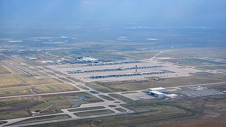

Overview
Denver International Airport (IATA: DEN, ICAO: KDEN, FAA LID: DEN) is an international airport in the Western United States, primarily serving metropolitan Denver, Colorado, as well as the greater Front Range Urban Corridor. At 33,531 acres (52.4 sq mi; 135.7 km2), it is the largest airport in the Western Hemisphere by land area and the second largest on Earth, behind King Fahd International Airport. Runway 16R/34L, with a length of 16,000 feet (3.03 mi; 4.88 km), is the longest public use runway in North America and the seventh longest on Earth. The airport is 25 miles (40 km) driving distance northeast of Downtown Denver, 19 miles (31 km) farther than the former Stapleton International Airport which DEN replaced; the airport is actually closer to the City of Aurora than central Denver, and many airport-related services, such as hotels, are located in Aurora.
Opened in 1995, DEN currently serves 25 different airlines offering non-stop service to over 215 destinations throughout the Americas, Europe, and Asia; it was the fourth airport in the U.S. to exceed 200 destinations. The airport is a major hub for United Airlines and the largest operating base for both Frontier Airlines and Southwest Airlines. With over 40,000 employees, the airport is the largest employer in Colorado. The airport is located on the western edge of the Great Plains and within sight of the Front Range of the Rocky Mountains.
In both 2021 and 2022, DEN was the third busiest airport in the world as well as the third busiest airport in the United States by passenger traffic. In 2023, it was the sixth busiest airport in the world and remained the third busiest airport in the United States having served around 77.8 million passengers, more than a 12% increase from the prior year. DEN has been among the top 20 busiest airports in the world every year since 2000.
History
Denver has traditionally been home to one of the busier airports in the United States because its midcontinent location was ideal for an airline hub. Several airlines, notably United Airlines and Continental Airlines, had hubs at the former Stapleton International Airport, helping make it the sixth-busiest airport in the country by the 1960s. However, Stapleton had little room to add more flights and its runways were too close together, which led to long delays and nationwide travel disruptions in bad weather.
From 1980 to 1983, the Denver Regional Council of Governments investigated areas for a new area airport north and east of Denver. Meanwhile, in 1983, Federico Peña was elected mayor of Denver, campaigning on a plan to expand Stapleton onto Rocky Mountain Arsenal lands. The plan had broad support, but leaders in nearby Adams County threatened to sue over noise concerns.
Eventually Peña struck a deal: Adams County leaders would rally citizens to back a plan for Denver to annex 54 square miles (140 km2) of the county to build an airport away from established neighborhoods. In 1988, Adams County voters approved the annexation. The proposal was met with some skepticism because of its location: 24 miles (39 km) from the heart of the city. But seeing the importance of a Denver air hub to the national transportation system, the federal government put $500 million (equivalent to $1.1 billion as of 2023) toward the new airport. The rest of the cost would be financed by bonds, to be repaid with fees on airlines. Ground was broken in September 1989.
Two years later, Mayor Wellington Webb inherited the megaproject, which at that time was scheduled to open on October 29, 1993.[16] At the time United was refusing to move to the new airport over the high proposed fees. The airline finally relented under the condition that the airport include an automated baggage system.
Construction delays pushed opening day back, first to December 1993, then to March 1994. By September 1993, delays due to a millwright strike and other events meant opening day was pushed back again to May 1994.
In April 1994, the city invited reporters to observe the first test of the new automated baggage system. Reporters were treated to scenes of clothing and other personal effects scattered beneath the system's tracks and carts that would often toss the luggage right off the system. After the embarrassing preview, the mayor cancelled the planned May opening. The baggage system continued to be a maintenance hassle and was finally terminated in September 2005, with traditional baggage handlers manually handling cargo and passenger luggage.
DEN finally replaced Stapleton on February 28, 1995, 16 months behind schedule and at a cost of $4.8 billion (equivalent to $8.8 billion as of 2023),[19] nearly $2 billion over budget ($3.7 billion as of 2023).[10][20] The construction employed 11,000 workers.[21] United Airlines Flight 1062 to Kansas City International Airport was the first to depart DEN and United Flight 1474 from Colorado Springs Airport was the first to arrive at the new airport.
In September 2003, runway 16R/34L was added, the airport's sixth and at 16,000 ft (3.0 mi; 4.9 km), it is 4,000 ft (0.76 mi; 1.2 km) longer than the other runways. Its length, exceeded by only six other runways in the world, allows fully laden Airbus A380s and Boeing 747-8s to take off in the hot and high conditions at the airport, which is roughly 1 mi (1.6 km) above sea level.
During a blizzard on March 17–19, 2003, the weight of heavy snow tore a hole in the terminal's white fabric roof, and over 2 feet (0.61 m) of snow on paved areas closed the airport and its main access road (Peña Boulevard) for almost two days, stranding several thousand people.[24][25] Another blizzard on December 20–21, 2006, dumped over 20 inches (51 cm) of snow in about 24 hours. The airport was closed for more than 45 hours, stranding thousands.[26] Following this, the airport invested heavily in new snow-removal equipment that has led to a dramatic reduction in runway occupancy times to clear snow, down from an average of 45 minutes in 2006 to just 15 minutes. In 2020, the airport was awarded the Balchen/Post award, which is presented by the Northeast Chapter of the American Association of Airport Executives (AAAE) for the outstanding snow and ice removal operation during difficult winter conditions.
After shunning DEN for over a decade for its high fees, Southwest Airlines entered the airport in January 2006 with 13 daily flights.[28] Southwest has since rapidly expanded and is now the airport's second-largest carrier after United.
On November 19, 2015, a Westin hotel was added to the airport and on April 22, 2016, DEN received commuter rail service to Denver Union Station with the opening of RTD's A Line.
On September 9, 2015, a political campaign was launched by Mayor Michael Hancock to radically expand commercial development at DEN, previously prohibited by intergovernmental agreement between Denver and Adams County.[32] The changes to the agreement were approved by both Denver and Adams County voters in November 2015.
In 2018, work began on a major interior renovation and reconfiguration to the entire Jeppesen Terminal including the beginning phases of construction to relocate two out of the three TSA security checkpoints from the Great Hall on Level 5 to Level 6 (East & West) while simultaneously updating and consolidating airline ticket counters/check-in for all airlines. Eventually, both pre- and post-security gathering and leisure areas will be incorporated into the spaces where both expansive TSA security areas on Level 5 are currently located. The third TSA security checkpoint currently accessible via the Concourse A bridge is expected to be removed once the new Level 6 security areas are completed. The renovation and reconfiguration will bring back the original intent and use of the Great Hall as a large commons area for airport patrons and visitors to enjoy. First phases of completion—including updated check-in and baggage drop counters for United & Southwest Airlines as well as visual and facility updates to parts of the terminal—began in late 2020 and progressively continue to this day. In early February 2024, the first of two new security screening areas (West Security on Level 6) opened to the public. It is located directly north of the new United Airlines Check-In facilities. The new East Security, directly across the Great Hall from West, is expected to open in mid to late 2025. At that time both Level 5 North & South Security areas (which have been in operation for over 20 years) will be closed and removed in addition to the A-Bridge Security. This phased terminal project is expected to be completed by 2028.
Additionally in 2018, work commenced on a major gate expansion to all three concourses with 12 new gates being added to A (including several single and double-jetway gates with direct access to U.S. Customs and Border Protection), 11 to B, and 16 to C, for a total of 39 new gates.[35] Following the completion of this project, United Airlines has leased 24 additional gates on both A and B (bringing its total gate count at DEN to around 90), as well as build a new United Club in A and expand their existing clubs in B.[36] Southwest Airlines leased 16 of the new gates in C bringing its total gate count at DEN to 40, which is SWA's largest gate count at any single airport.[37] As of November 2022, all new gates in A-West, B-West, B-East and C-East are in use and new retail and restaurant tenants will continue to open through 2024 as well as new art commissioned and installed through 2025. Additionally, all existing way-finding signs, flight information display systems and gate signs are expected to be replaced in the coming years matching what is found at the new gates and within the renovated portions of the terminal. When both the ongoing terminal and concourse projects are completed, the airport will be able to handle upwards of 100 million passengers per year.
On August 20, 2021, the airport experienced a mechanical failure of its train system that caused significant delays.[39] In response, a request for information from the private sector was issued to analyze options to possibly supplement the train system in the future.[40] By 2023, several companies proposed their ideas to transport passengers.
In 2022, a committee was formed to support efforts to establish flights between Denver and Africa.
In August 2022, DEN broke ground on an additional gate expansion project that would bring a total of 14 ground-loaded/tarmac gates to the east end of Concourse A to be used solely for Frontier Airlines operations. Originally constructed in 2018 as temporary regional gates for United Airlines, this A-East wing was vacated by United earlier in 2022, making way for the renovation and expansion of the Frontier gates. It is intended to be removed once a more permanent A-East expansion (similar to what recently opened in A-West) occurs at an unknown future date. The renovated and expanded Concourse A-East wing officially opened summer 2024 and results in a gain of four gates for Frontier.
In December 2023 DEN started construction on a new 'Center of Equity and Excellence in Aviation' which will help underserved communities and prepare current and future employees for a career in aviation. The CEEA will be located directly below the Westin Hotel and DEN Plaza and is expected to open in late 2024 or early 2025.
In late 2023, the airport laid out preliminary plans to add four new concourses with 100 more gates east and west of the terminal by 2045.[45] The project is being referred to as 'Operation 2045' and will help support the airport’s goal of serving over 125 million passengers annually by that time.
Facilities
The airport is 23 miles (37 km) from Downtown Denver, which is 15 miles (24 km) farther away than Stapleton International Airport, the airport DEN replaced.
The 52.4 square miles (136 km2; 33,500 acres)[6] of land occupied by the airport is more than one and a half times the size of Manhattan (including water) (33.6 square miles or 87 square kilometres). DEN is larger in land area (excluding water) than the US cities of Boston, Massachusetts and San Francisco, California. DEN occupies the largest amount of commercial airport land area in North America, by a great extent. The land was transferred from Adams County to Denver after a 1989 vote,[46] increasing the city's size by 50 percent and bifurcating the western portion of the neighboring county. All freeway traffic accessing the airport from central Denver leaves the city and passes through Aurora for nearly two miles (3.2 km), making the airport a practical exclave. Similarly, the A Line rail service connecting the airport with downtown Denver has two intervening stations in Aurora.
Terminal
DEN has one terminal, named the Jeppesen Terminal after aviation safety pioneer Elrey Borge Jeppesen, and three midfield concourses, spaced far apart. The three midfield concourses have a total of 179 gates in operation as of late 2022. Concourse A is accessible via a pedestrian bridge directly from the terminal building, as well as via the underground train system that services all three concourses. For access to Concourses B and C, passengers must utilize the train. All international arrivals without border pre-clearance are processed in Concourse A; this concourse also has four 3-jetway international gates that can support ADG Group VI aircraft such as an Airbus A380 and a Boeing 747-8, the two largest commercial aircraft in the world.
- Concourse A is used by Delta Air Lines, Frontier Airlines, JetBlue, United Airlines (including all international arrivals), and all international carriers. It has 60 gates, including several ground-level boarding and double jetway gates.
- Concourse B is solely used for United Airlines flights. It has 72 gates, including four double jetways and several regional gates.
- Concourse C is primarily used for Southwest Airlines flights, as well as American Airlines, Alaska Airlines, and most regional airliner flights. It has 47 gates, including four ground-level boarding gates.